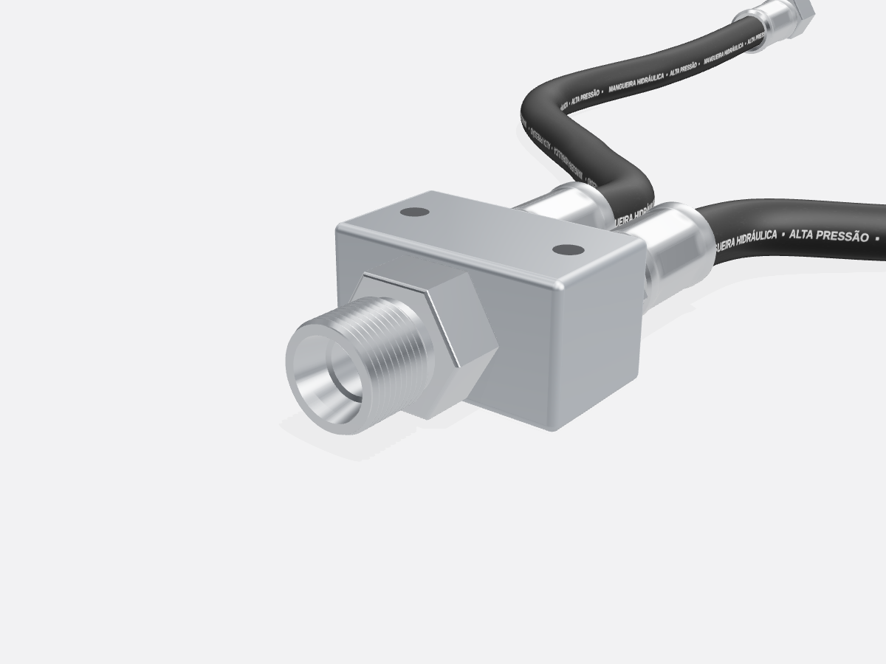
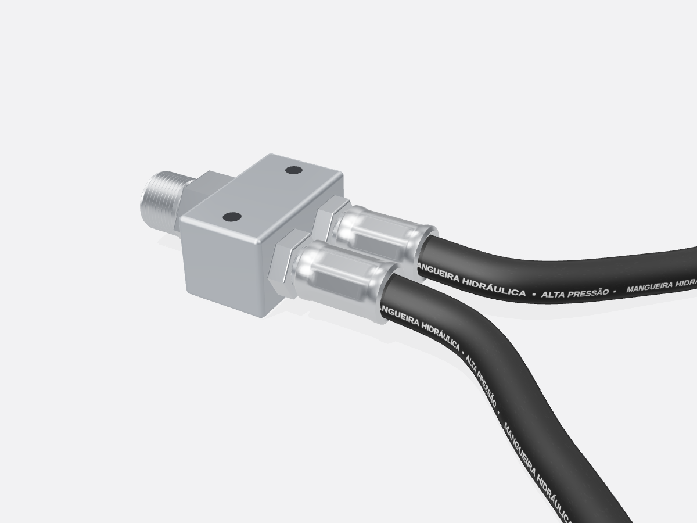
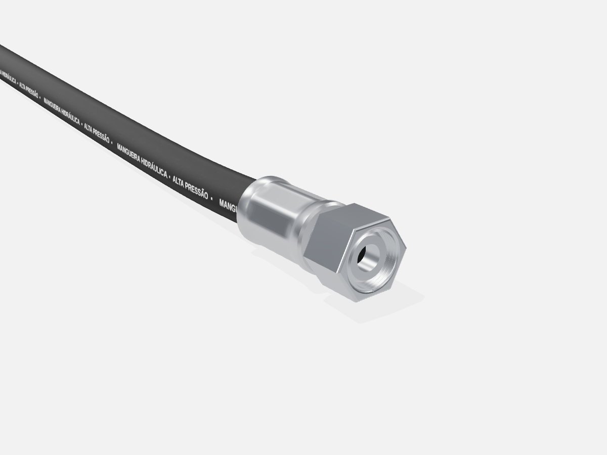

| Desenho | MH-001 rev. 0 | Folha | 1 / 3 |
| Data | 09/10/2026 | Escala | sem escala |



| Desenho | MH-001 rev. 0 | Folha | 2 / 3 |
| Data | 09/10/2026 | Escala | sem escala |
| Item | Descrição | Especificação | Qtd. |
|---|---|---|---|
| ① | Conexão de entrada | DKO TB22 macho — tubo Ø22 série L, rosca M30×2 ¹ | 1 |
| ② | Derivação | 1 entrada → 2 saídas — construção a sugerir pelo fornecedor | 1 |
| ③ | Mangueira hidráulica | Ramal A 600 mm · Ramal B 1500 mm — tipo e DN conforme pressão | 2 |
| ④ | Conexão de saída | DKO TB15 fêmea giratória — tubo Ø15 série L, rosca M22×1,5 ¹ | 2 |